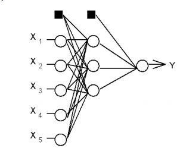

Introduction
L’utilisation de l’intelligence artificielle pour le trading est une pratique branchée qui s’est rapidement répandue dans le monde entier. Mais essayons d’analyser comment est-elle réaliste la création d’une plate-forme pour le trading basé sur l’intelligence artificielle.
Le développement de la technologie avancée par l’IA est de plus en plus répandu dans notre vie quotidienne. Les réseaux de neurones artificiels sont la base des algorithmes de l’IA. Le principe, que toutes les opérations sont construites autour, est relativement simple. Dans l’apprentissage automatique. Les réseaux de neurones artificiels forment une famille de modèles d’éducation statistique, créant des réseaux neuronaux biologiques (systèmes nerveux centraux des animaux, en particulier le cerveau). Essentiellement, il s’agit de systèmes de communication qui transfèrent des messages entre eux et qui ont un poids numérique. Cela les rend adaptables à l’entrée et capables d’apprentissage. Par conséquent, les systèmes basés sur les réseaux neuronaux s’adaptent constamment aux conditions changeantes en temps réel.
La figure ci-dessus illustre un exemple d'un réseau de neurone de perceptron avec trois couches
Les inconvénients du Trading basé sur l'AI
La figure ci-dessus montre que l’intelligence artificielle, entraîné uniquement pour prédire le résultat final, peut facilement perdre tous les fonds investis pendant la phase d'apprentissage.
Comment l'AI est-elle utilisée ?
Chaque industrie a une forte demande de capacités d’intelligence artificielle – en particulier les systèmes de réponse aux questions qui peuvent être utilisés pour l’aide juridique, la recherche de brevets, la notification des risques et la recherche médicale. Les autres utilisations de l’IA comprennent :
- Soins de santé :Les applications de l’intelligence artificielle peuvent fournir une médecine personnalisée et des lectures aux rayons X. Les assistants de soins de santé personnels peuvent agir comme entraîneurs de la vie, vous rappelant de prendre vos pilules, faire de l’exercice ou manger plus sainement.
- Vente au détail: L’IA offre des capacités d’achat virtuelles qui offrent des recommandations personnalisées et discutent des options d’achat avec le consommateur. La gestion des stocks et les technologies de disposition des sites seront également améliorées grâce à l’IA.
- Industrie manufacturière: L’intelligence artificielle peut analyser les données de l’IoT en partant de l’équipement connecté pour prévoir la charge et la demande prévues à l’aide de réseaux récurrents, un type spécifique de réseau d’apprentissage profond utilisé avec des données de séquence.
- Services bancaires: L’intelligence artificielle améliore la rapidité, la précision et l’efficacité des efforts humains. Dans les institutions financières, les techniques d’intelligence artificielle peuvent être utilisées pour identifier les transactions susceptibles d’être frauduleuses, adopter une notation de crédit rapide et précise, ainsi que d’automatiser manuellement des tâches de gestion des données intenses.
Méthodes et technologies de l'AI ?
Des oeuvres d'AI en combinant les grandes quantités de données avec le traitement rapide, itératif et des algorithmes intelligents, la permission du logiciel pour apprendre automatiquement de modèles ou des caractéristiques dans les données. AI est un large champ d'étude qui inclut beaucoup de théories, méthodes et technologies, aussi bien que les souschamps majeurs suivants:
- Le machine Learning automatise la construction des modèles analytiques. Il utilise des méthodes de réseaux neuraux, la statistique, la recherche opérationnelle et la physique pour trouver des insights cachés dans des données sans explicitement être programmé pour où regarder ou que conclure.
- Un réseau de neurones est un type d'apprentissage automatique qui est composé d'unités inter-connectées (comme des neurones) qui traitent des informations en répondant aux apports externes, retransmettant des informations entre chaque unité. Le processus exige multiples passages aux données pour trouver des connexions et tirer la signification de données non définies.
- Le deep Learning utilise les réseaux neuraux énormes avec beaucoup de couches de traitement des unités, profitant d'avance de la puissance de calcul et des techniques d'apprentissage améliorées pour apprendre le modèle. Les applications communes incluent l'image et la reconnaissance vocale.
- Le calcul cognitif est un section d'AI qui lutte pour une interaction naturelle, semblable à l'homme avec des machines. En utilisant AI et le calcul cognitif, le but ultime pour une machine est de simuler des processus humains par la capacité d'interpréter des images et les discours afin de parler et répondre ensuite de manière cohérente
- La vision par ordinateur compte sur la reconnaissance de formes et le deep learning pour déterminer ce qui est dans une image ou une vidéo. Quand les machines peuvent traiter, analyser et comprendre des images, ils peuvent capturer des images ou des vidéos en temps réel et interpréter leur environnement.
- Le traitement automatique des langues (NLP) est la capacité d'ordinateurs d'analyser, comprendre et produire la langue humaine, y compris le discours. L'étape suivante de NLP est l'interaction de langage naturel, qui permet aux humains de communiquer avec des ordinateurs utilisant le langage familier et courant pour exécuter des tâches.
Conclusion
Dans cette section, nous avons défini l'Intelligence Artificiel et avons parlé un peu de l'histoire de cette technologie. Ensuite, nous avons expliqué pour l'IA est importante comment elle est utilisée pour améliorer notre quotidien. Enfin, nous avons définis les différents méthodes et technologies de l'Intelligence Artificiel qui sont utilisés dans la réalisation des projets dans divers domaines.